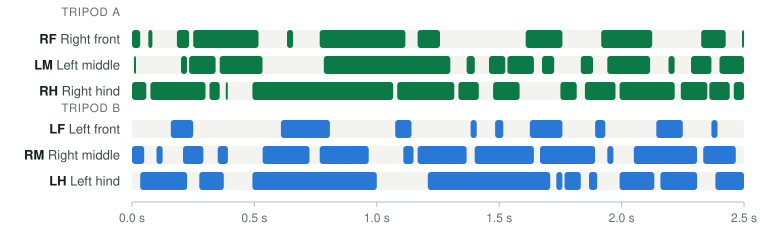

How NeuroFly is built
A closed loop from world to senses to brain to nerve cord to body and back, running on measured connectome wiring. This page lists every data source, every model component and its parameters, and what the model cannot do.
1 · The closed loop
Sensing, neural updates, motor output, body mechanics and sensory feedback advance together on one fixed clock (120 Hz; 8–9 neural steps of 1 ms per tick; five 600 Hz mechanics sub-steps). Nothing in the loop depends on the display frame rate, so a run is the same on a fast and a slow computer.
2 · Data sources
All connectivity is taken from published connectome releases. Cell identities are the releases’ own annotations; side, leg and function assignments are never inferred from IDs or connectivity alone.
| Component | Source | Neurons | Contents |
|---|---|---|---|
| Core brain circuit | FlyWire FAFB v783, adult female brainDorkenwald et al. 2024; Schlegel et al. 2024 | 6,338 | 338 identified command and sensory neurons (looming detectors LC4/LPLC2, giant fiber, steering, walking, backward-walking, grooming and flight descending neurons, Johnston’s-organ neurons) plus their 6,000 strongest synaptic partners; 703,381 signed connections |
| Thermosensory extension | same dataset | 68 | all 7 hot and 9 cold receptor neurons of the brain and the 52 relay neurons on their strongest two-synapse paths into the circuit; +4,749 connections |
| Taste and grooming extension | same dataset, full unthresholded connection table | 864 | 129 sugar/water and 65 bitter gustatory receptor neurons, 204 JO-F antennal mechanosensors, 42 DNg12 head-grooming descending neurons, 56 proboscis and ingestion motor neurons, 368 relays; +76,089 connections |
| Nerve cord | MaleCNS v1.0, adult maleBerg et al. 2025 | 1,045 | 16 descending, 622 premotor and connecting interneurons, 220 motor, 153 sensory and 34 ascending neurons; 17,224 directed connections with 708,689 synaptic contacts; explicit leg and side annotations |
| Anatomy explorer | BANC v888 (female), MaleCNS v1.0 (male), FAFB v783 (female) | 3 × 6,000 | separately browsable anatomical subsets with cell search, inputs/outputs, shortest paths and 48 native skeletons; not part of the running simulation |
A “connection” is one record per neuron pair and brain region, weighted by the number of synapses measured there and signed by the predicted transmitter: acetylcholine excitatory; GABA and glutamate inhibitory; dopamine, serotonin and octopamine entered at half weight as a simplification of their modulatory action.
One animal, brain and nerve cord
Today’s running model joins a female brain (FlyWire) to a male nerve cord (MaleCNS) through a modelled interface, because until recently no single animal had both mapped. The BANC connectome now provides brain and nerve cord of one female fly, and the MaleCNS release does the same for a male.
NeuroFly 2.0 already lets you browse both as anatomy — cell types, inputs and outputs, shortest paths and native skeletons. Moving the simulation onto one specimen replaces the cross-animal interface with measured synapses, from the descending command neurons down to the motor neurons of each leg.
3 · Neuron model
Each brain neuron is a leaky integrate-and-fire unit, the standard reduced model of computational neuroscience and the model class used for the whole-brain FlyWire simulation of Shiu et al. (2024).
- Membrane time constant 20 ms, threshold normalised to 1, absolute refractory period 2 ms, time step 1 ms.
- Synaptic efficacy 0.0002 of threshold per synapse in the core circuit, with a 4 ms delay for inhibitory synapses (feedforward inhibition races excitation, as in the fly’s escape circuit).
- The appended taste and grooming pathways run at 0.0062 of threshold per synapse — the peak postsynaptic potential of the Shiu et al. model — with their recurrent connections at 60% of that strength.
- Low tonic background drive with seeded noise keeps the network in a realistic, mostly quiet regime; the giant fiber is silent at rest.
- Electrical coupling from the looming detectors onto the giant fiber is represented by a gain on those inputs.
Neuron-specific membrane properties, receptor kinetics and neuromodulation are not in the connectome and are therefore not claimed; see Limitations.
4 · Senses
Every stimulus reaches only the real sensory neurons that transduce it. The transduction itself is a model.
- Vision. The fly’s own eye is rendered from her position; a centre–surround stage computes looming and motion signals that drive the LC4 and LPLC2 looming-detector populations, left and right.
- Hearing, wind and touch. Johnston’s-organ neurons: JO-A/B for near-field sound, JO-C/D/E for wind and air flow, JO-F for antennal deflection by particles.
- Temperature. The 7 hot and 9 cold receptor neurons, driven by rate of change and by deviation from 24–26 °C.
- Taste. Sugar/water and bitter gustatory receptor neurons of the labellum.
- Proprioception. Joint and contact feedback enters the nerve-cord model; its ascending neurons report to the brain.
Odour has no receptor neurons in this subgraph and therefore drives nothing.
5 · From neurons to behaviour
Behaviour is read out from identified descending neurons whose function has been established experimentally. The body rules that turn their firing into movement are model components and are labelled as such in the application.
| Neurons | FlyWire type | Behaviour | Experimental basis |
|---|---|---|---|
| Giant fiber | DNp01 | escape takeoff | von Reyn et al. 2014 |
| Looming detectors | LC4, LPLC2 | drive the giant fiber; darting | von Reyn et al. 2017; Ache et al. 2019 |
| Walking command | DNp09 | forward walking, speed | Bidaye et al. 2020 |
| Steering | DNa01, DNa02 | left/right turning | Rayshubskiy et al. 2025 |
| Moonwalker | MDN | backward walking | Bidaye et al. 2014 |
| Grooming commands | DNg11; DNg12 | front-leg rubbing; head sweeps | Guo, Zhang & Simpson 2022; Hampel et al. 2020 |
| Proboscis motor neurons | MN9 and others | proboscis extension, feeding | Shiu et al. 2024 |
Brain and nerve cord come from two different animals; no synapses between them exist in the data. They are joined by a modelled interface that passes population firing rates between descending neurons of the same type and side, and back from the nerve cord’s ascending neurons. Leg order is RF, LF, RM, LM, RH, LH throughout.
How the legs step
The extracted nerve-cord circuit contains the premotor and motor neurons of all six legs, but not the interneurons that make legs step rhythmically: driven by the walking command alone, its motor neurons fire tonically and the legs twitch. Since release 2.1, NeuroFly adds modelled, leg-local stepping rules in the tradition of Walknet (Cruse 1990; Dürr, Schmitz & Cruse 2004) and the rule-based controller of NeuroMechFly v2 (Wang-Chen et al. 2024): each leg switches from stance to swing at its rear extreme position and back at its front one, sensed from the leg; neighbouring legs do not lift off together; DNp09 sets speed, MDN reverses direction, and a left–right difference in DNa01/DNa02 shortens the inner strides and, in sharp turns, makes the inner legs step backward.
Where the rules act — and what they do not do
The rules never move a muscle directly. They drive 96 of the cord’s 622 premotor cells, chosen by measuring in the model which cells move which joint; the measured wiring carries the rhythm on to the 220 leg motor neurons. Cut the cord’s synapses and she stands still. The result is an alternating, tripod-like gait at about two steps per second, with a slight drift to the right because the retained wiring drives the six legs unequally. Real flies step five to fifteen times per second: this is qualitatively fly-like walking, not calibrated walking.

6 · Measured versus modelled
| Neurons, positions, cell types | Measured |
| Synaptic connections and counts | Measured |
| Transmitter identity | Predicted from EM |
| Membrane and synaptic dynamics | Modelled |
| Sensory transduction | Modelled |
| Brain–nerve-cord interface | Modelled |
| Muscles, joints, body mechanics | Modelled |
| Rules from commands to movement | Modelled |
| Stepping rules and the premotor cells they drive | Modelled |
7 · Reproducibility
- Seeds. Neural noise and every behavioural choice draw from seeded generators; the same seed and the same inputs give the same run. The automated tests check this.
- Fingerprints. Each run records the SHA-256 hash of every data file it loaded and the model version.
- Manifests. Recordings carry the environment, all interventions (silencing, activation, pharmacology) with timestamps, and any simulation time lost to computer overload.
- Export. 20 Hz CSV of all population rates, inputs and body state; per-trial tables for every experiment.
8 · Limitations
These limits are part of the method. They define what NeuroFly’s results can and cannot support.
- The running brain is a subset of the FlyWire connectome (7,270 of about 139,000 neurons), selected around identified sensory and command neurons. Cells outside the subset contribute nothing.
- Brain and nerve cord come from different animals (female brain, male nerve cord), joined by a modelled interface.
- All neurons share one generic model; cell-type-specific membrane properties, gap junctions (except one lumped gain), neuromodulation and receptor kinetics are not represented.
- The appended taste and grooming pathways are cut out of a recurrent brain; driven far beyond the range the simulated world produces, their relay loops can sustain activity that the full brain would presumably prevent.
- Learning is limited to an optional, bounded plasticity experiment; the model does not reproduce habituation or associative learning (see Evidence).
- The body is a kinematic–dynamic model, not a calibrated biomechanical fly; walking is not claimed to be biologically calibrated. The stepping rules that make the legs step are modelled, not part of the connectome; the gait runs at about two steps per second and drifts slightly to the right.
- Pharmacology is a gain on transmitter classes. It is not a model of any specific drug, its dose, uptake or metabolism.
References
- Dorkenwald S, et al. Neuronal wiring diagram of an adult brain. Nature 634, 124–138 (2024). doi:10.1038/s41586-024-07558-y
- Schlegel P, et al. Whole-brain annotation and multi-connectome cell typing of Drosophila. Nature 634, 139–152 (2024). doi:10.1038/s41586-024-07686-5
- Shiu PK, et al. A Drosophila computational brain model reveals sensorimotor processing. Nature 634, 210–219 (2024). doi:10.1038/s41586-024-07763-9
- Berg S, et al. Sexual dimorphism in the complete connectome of the Drosophila male central nervous system. bioRxiv (2025). doi:10.1101/2025.10.09.680999
- Bates AS, et al. Distributed control circuits across a brain-and-cord connectome. Nature 656, 957–970 (2026). doi:10.1038/s41586-026-10735-w
- von Reyn CR, et al. A spike-timing mechanism for action selection. Nat Neurosci 17, 962–970 (2014). doi:10.1038/nn.3741
- von Reyn CR, et al. Feature integration drives probabilistic behavior in the Drosophila escape response. Neuron 94, 1190–1204 (2017). doi:10.1016/j.neuron.2017.05.036
- Ache JM, et al. Neural basis for looming size and velocity encoding in the Drosophila giant fiber escape pathway. Curr Biol 29, 1073–1081 (2019). doi:10.1016/j.cub.2019.01.079
- Bidaye SS, et al. Neuronal control of Drosophila walking direction. Science 344, 97–101 (2014). doi:10.1126/science.1249964
- Bidaye SS, et al. Two brain pathways initiate distinct forward walking programs in Drosophila. Neuron 108, 469–485 (2020). doi:10.1016/j.neuron.2020.07.032
- Rayshubskiy A, et al. Neural circuit mechanisms for steering control in walking Drosophila. eLife 13, RP102230 (2025). doi:10.7554/eLife.102230
- Cruse H. What mechanisms coordinate leg movement in walking arthropods? Trends Neurosci 13, 15–21 (1990). doi:10.1016/0166-2236(90)90057-H
- Dürr V, Schmitz J, Cruse H. Behaviour-based modelling of hexapod locomotion: linking biology and technical application. Arthropod Struct Dev 33, 237–250 (2004). doi:10.1016/j.asd.2004.05.004
- Wang-Chen S, et al. NeuroMechFly v2: simulating embodied sensorimotor control in adult Drosophila. Nat Methods 21, 2353–2362 (2024). doi:10.1038/s41592-024-02497-y
- Guo L, Zhang N, Simpson JH. Descending neurons coordinate anterior grooming behavior in Drosophila. Curr Biol 32, 823–833 (2022). doi:10.1016/j.cub.2021.12.055
- Hampel S, et al. Distinct subpopulations of mechanosensory chordotonal organ neurons elicit grooming of the fruit fly antennae. eLife 9, e59976 (2020). doi:10.7554/eLife.59976